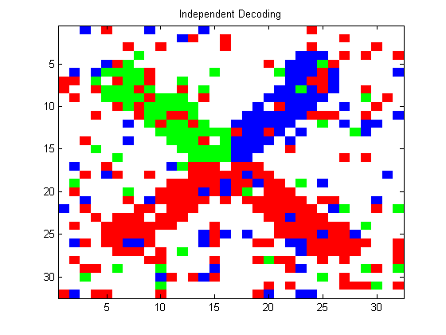
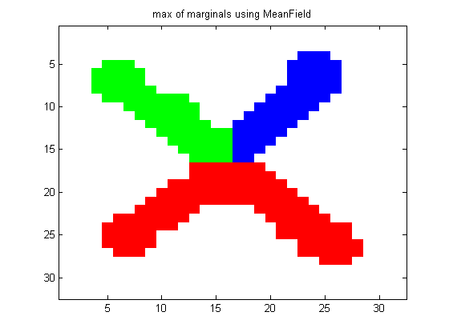
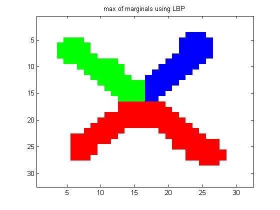

Contents
Demonstrate inference in a 2d grid of a multi-state noisy image of an X
Based on http://www.cs.ubc.ca/~schmidtm/Software/UGM/alphaBeta.html
% This file is from pmtk3.googlecode.com
Get model and data
setSeed(0); loadData('XimgRgb'); Xclean = Xrgb; X = Xclean + 0.5*randn(size(Xclean)); [nRows, nCols, ncolors] = size(Xclean); %{ figure; image(Xclean); title('clean'); printPmtkFigure('mrfImgRbgClean') figure; imshow(X); title('noisy');printPmtkFigure('mrfImgRgbNoisy') %}
Independent Decoding
[model] = mrf2MkLatticeXrgb(X, y, 'dummy'); [junk IndDecoding] = max(model.nodePot,[],2); figure; imagesc(reshape(IndDecoding,nRows,nCols)); colormap([1 1 1;1 0 0;0 1 0;0 0 1]); title('Independent Decoding'); printPmtkFigure('mrfImgRgbIndep')
MAP estimation
methods = {};
methodArgs = {};
%{
methods{end+1} = 'ICM';
methodArgs{end+1} = {'nRestarts', 100};
methods{end+1} = 'AlphaBetaSwap';
methodArgs{end+1} = {};
%}
methods{end+1} = 'LBP';
methodArgs{end+1} = {'maxIter', 100};
for i=1:length(methods)
method = methods{i};
args = methodArgs{i};
[model] = mrf2MkLatticeXrgb(X, y, method, args);
zhat = mrf2Map(model);
energy = mrf2Energy(model, zhat);
figure; imagesc(reshape(zhat,nRows,nCols));
colormap([1 1 1;1 0 0;0 1 0;0 0 1]);
title(sprintf('MAP estimate using %s, E=%5.3f', method, energy));
printPmtkFigure(sprintf('mrfImgRgbEst%s', method))
end
Inference
methods = {};
methodArgs = {};
methods{end+1} = 'Gibbs';
methodArgs{end+1} = {'burnIn', 100, 'nSamples', 200};
methods{end+1} = 'MeanField';
methodArgs{end+1} = {'maxIter', 100};
methods{end+1} = 'LBP';
methodArgs{end+1} = {'maxIter', 100};
for i=1:length(methods)
method = methods{i};
args = methodArgs{i};
[model] = mrf2MkLatticeXrgb(X, y, method, args);
[nodeBel] = mrf2InferNodesAndEdges(model);
[junk zhat] = max(nodeBel,[],2);
figure; imagesc(reshape(zhat,nRows,nCols));
colormap([1 1 1;1 0 0;0 1 0;0 0 1]);
title(sprintf('max of marginals using %s', method));
printPmtkFigure(sprintf('mrfImgRgbMaxOfMarginals%s', method))
end
 